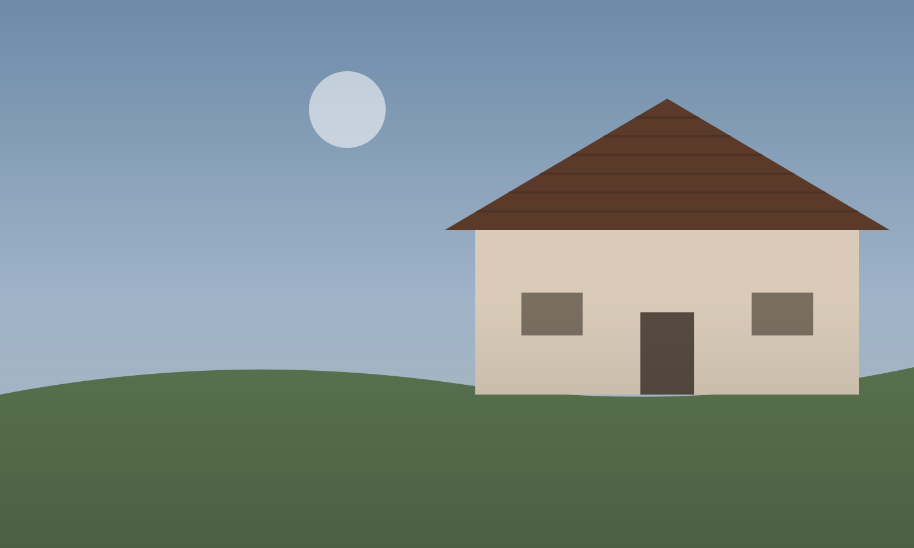

| HOME SERVICES GALLERY CONTACT US |
 |
Welcome to Our Website!Summit Peak Roofing has been serving Austin since 2004. We are a family owned company and we do all kinds of roofing. We are licensed and insured and every job comes with our 10 year workmanship warranty. We do roof repair, roof replacement, storm damage and hail repair, leak repair, gutters and metal roofing. We work with all insurance companies. Serving Austin, Round Rock, Pflugerville, Cedar Park, Buda and Kyle. |
Contact UsCall: 512-555-0199 |
| © 2016 Summit Peak Roofing. All rights reserved. | Facebook |